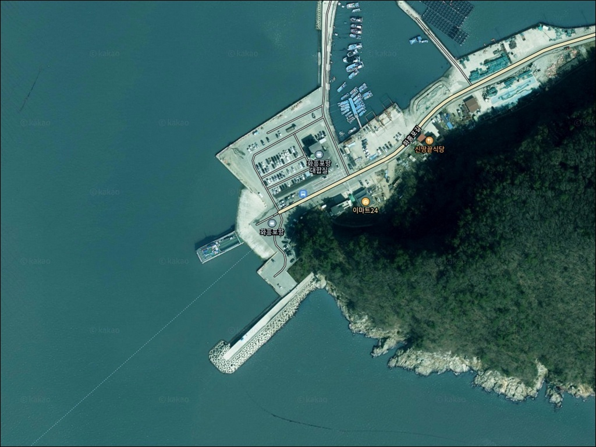
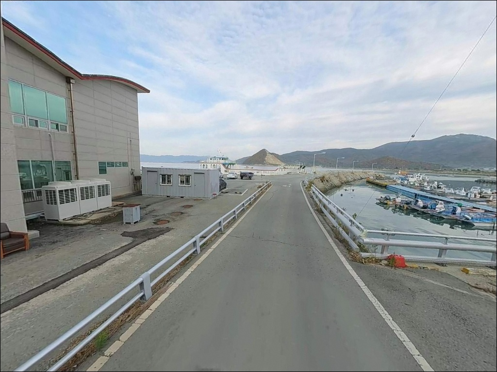
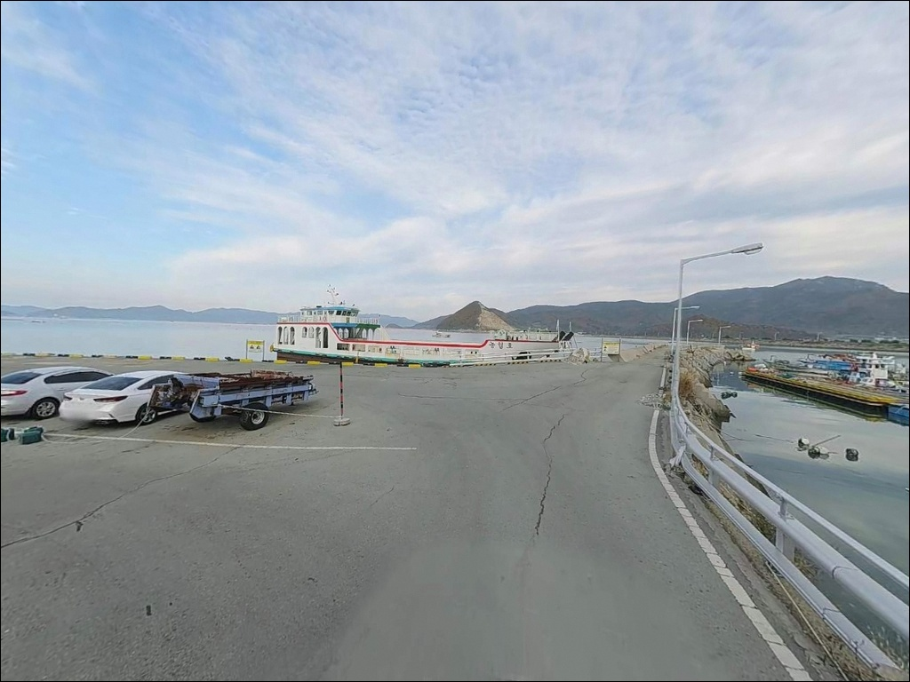
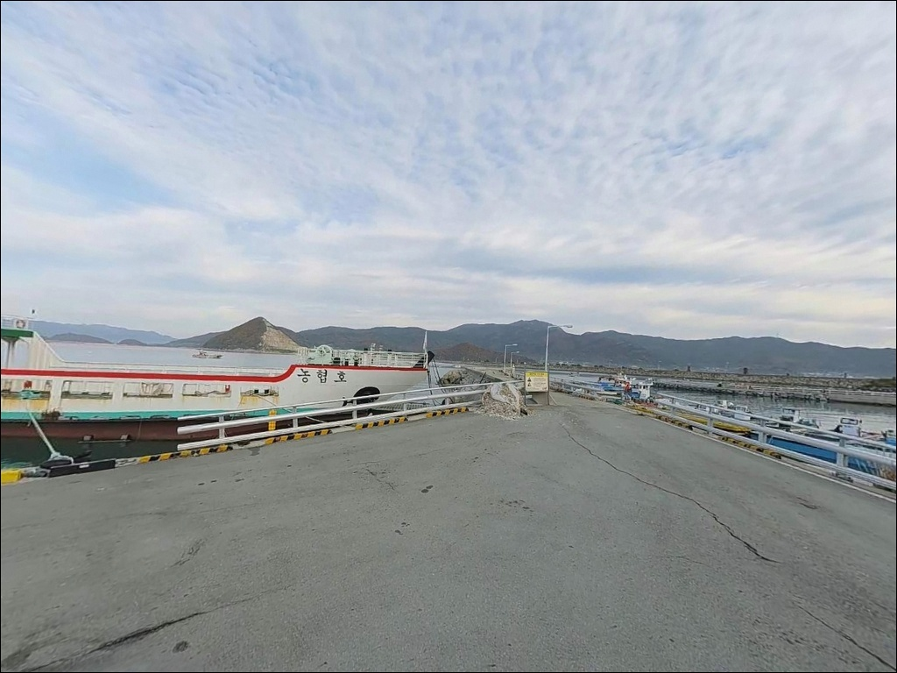
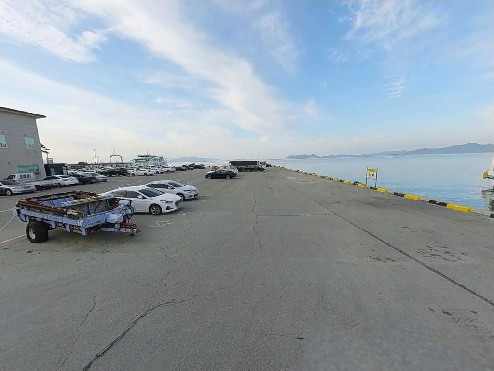
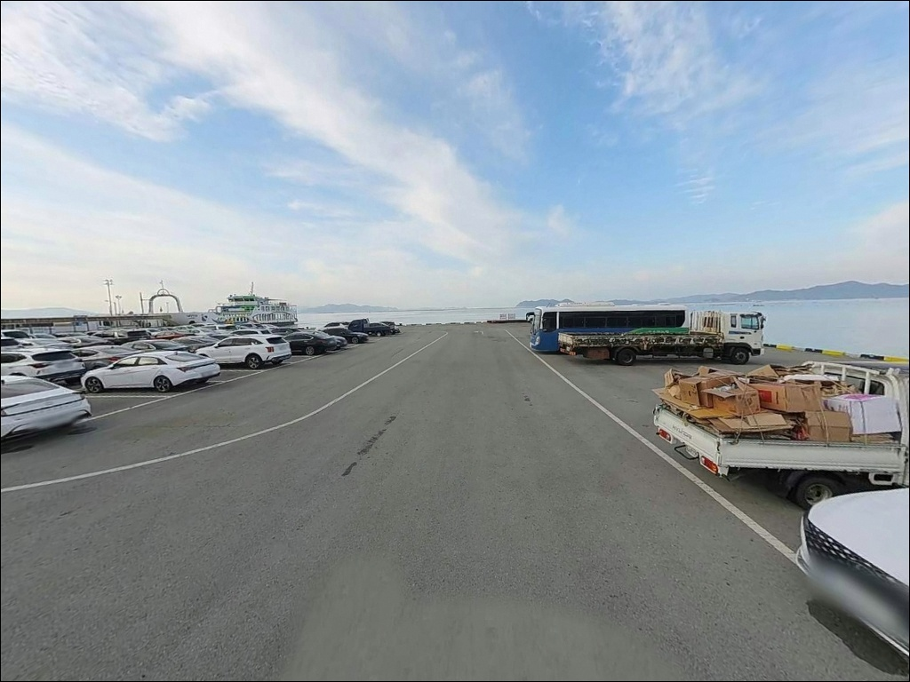
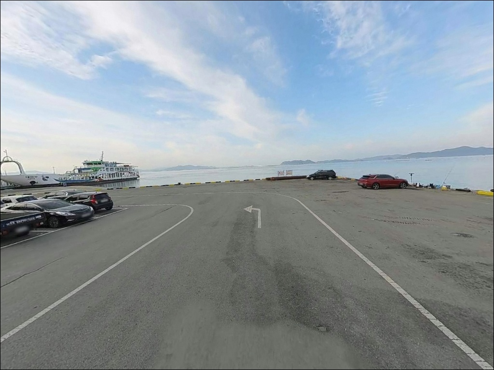
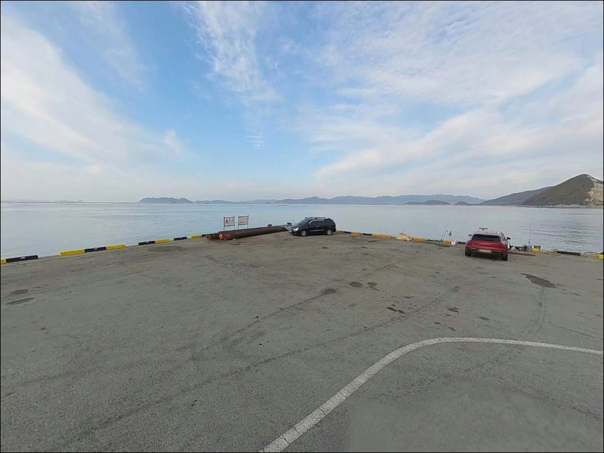
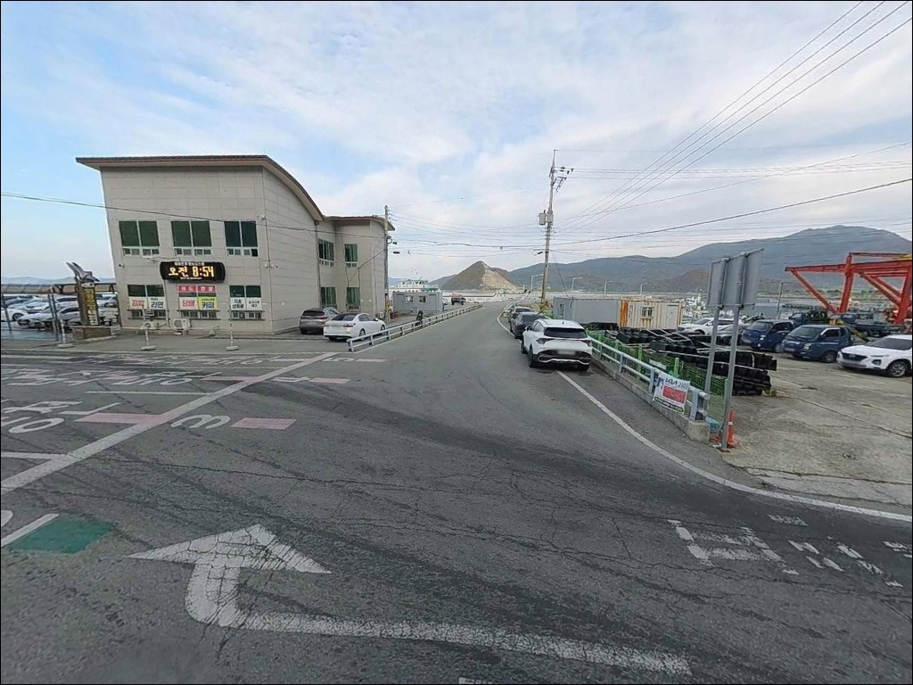

화흥포항, 전남 완도군 힐링 여행으로 제격인 바다 차박 낚시 장소
이 페이지에는 광고(제휴 링크 포함)가 있으며, 광고 링크를 통해 구매하면 운영자가 판매 수익 또는 수수료를 받을 수 있습니다. 포인트 사진: 카카오맵 스카이뷰·로드뷰. 이 페이지의 지도·사진 이미지는 카카오맵의 실제 서비스 이미지와 다를 수 있습니다.


포인트 안내
화흥포항
전남 완도군 완도읍 정도리 830-12
여객선 운항 시간대를 확인하지 않고
파제제 구간에 자리를 잡으면,
선박 항로와 겹치는 상황에서
채비를 회수하거나 자리를 옮겨야 하는 일이 생깁니다.
화흥포항은 노화도·소안도·보길도를 오가는
여객선 터미널을 겸한 연안항으로,
낚시 자리와 항로가 공존하는 구조를 먼저 이해해야 하는 포인트입니다.
파제제 385m, 방파제 84m, 물양장 200m로 구성된 이 항구는
완도 서쪽 해역을 향해 열려 있어
소안수도 방면 조류 흐름이 살아 있는 편입니다.
구조만 놓고 보면 다양한 낚시 방식을 복합적으로
운용할 수 있는 여건을 갖추고 있습니다.
이 글은 화흥포항의 진입 여건, 차박 환경,
지형 기반 낚시 여건과 스타일별 공략 조건에 집중합니다.
조황 단정이나 특정 어종 보장은
이 글의 범위에 포함되지 않습니다.

1. 진입 동선과 포인트 접근성
화흥포항은 완도읍 정도리 소재로,
완도읍 방면에서 해안도로를 따라
포장된 왕복 2차선 이상 도로로 진입합니다.
차도선과 화물차가 오가는 연안항 특성상
진입로 폭이 충분히 확보되어 있어
대형 SUV나 캠핑 트레일러도 진입에 어려움이 없습니다.
항구 부지 내에 회차 공간이 확보되어 있으며,
항구 앞 옹벽 인접 구간에
무료 주차장이 확인됩니다.
다만 여객선 이용객 차량과 낚시꾼 차량이
같은 공간을 공유하는 구조라,
오전 여객선 운항 피크 시간대는 주차 여건이 빡빡해질 수 있습니다.
항구 외곽 쪽 주차 자리를 먼저 확인하는 편이 좋습니다.
낚시 자리까지의 도보 이동 거리는 짧은 편입니다.
방파제와 파제제 입구가 주차장에서
가깝게 연결되어 있어,
무거운 장비를 들고도 이동 부담이 크지 않습니다.

2. 차박 환경과 야간 체류 여건
화흥포항의 차박 여건은
편의성 중심으로 이해하는 것이 맞습니다.
여객선터미널 시설과 항구 가로등이 있어
야간에도 완전한 암흑은 아니며,
완도읍 생활권 안에 위치해
안전성은 높은 편입니다.
여객선 운항이 마무리되는 저녁 이후에는
인적이 크게 줄어 비교적 조용해지는 편입니다.
낚시를 마치고 차 안에서 하룻밤 머무는
간이 체류 용도로는 나쁘지 않은 조건입니다.
반면 낮 시간대에는 차량 이동과 선박 운항이 겹쳐
완전히 조용한 분위기를 기대하기는 어렵습니다.
프라이버시는 낮은 편으로,
외진 어촌형 포인트와는 다른 성격입니다.
조용한 차박을 원한다면 완도 해안도로 외곽 구간이
더 적합한 선택지입니다.


3. 주변 편의시설 및 인프라 현황
항구 바로 인접 지번에
이마트24 완도화흥포점이 있습니다.
먼 곳까지 이동하지 않아도
기본 식음료와 얼음을 조달할 수 있는
환경입니다.
여객선 터미널 내 매점도 운영되고 있어
소량 소품 보충에는 도움이 됩니다.
주유는 반경 3km 이내
SK 달목성주유소(완도읍 청해진서로 384)를
이용할 수 있습니다.
응급 상황 발생 시에는
완도읍 내 완도대성병원이
24시간 운영되고 있습니다.
완도읍 중심 생활권까지 이동하면
편의점, 식당, 약국 등 읍 단위 인프라를
활용할 수 있어,
생활 편의성 측면에서는
완도 권역의 다른 외곽 포인트보다
우위에 있습니다.

4. 진입 전 반드시 챙겨야 할 준비사항
화흥포항 방문에서 가장 먼저 확인할 것은
여객선 운항 시간표와 물때입니다.
노화도·소안도 방면 여객선이
항내를 수시로 오가는 구조라,
운항 시간대와 낚시 자리가
겹치지 않도록 조율해야 합니다.
파제제 외항 구간은 선박 항로와 거리를 확인한 뒤 자리를 잡는 것이 기본 매너입니다.
완도 해역은 조류가 강한 편입니다.
바다타임에서 화흥포 기준 물때를 확인하고,
초들물 전후와 중날물 타이밍을 먼저 계산한 뒤
출발 시각을 맞추는 것이 좋습니다.
파제제 외항 구간 특성상
채비 손실이 잦을 수 있어 여분 채비를 충분히 챙겨야 합니다.
방파제·파제제 끝단은
추락 위험이 있는 구간이므로
구명조끼 착용은 필수입니다.
야간 낚시 시에는 헤드랜턴을 반드시 준비하고,
기상청 완도 기상특보를 당일 아침 다시 한번
확인하는 편이 안전합니다.

5. 파제제 385m가 만드는 낚시 여건
화흥포항에서 낚시 여건을 논할 때
중심은 파제제입니다.
방파제(84m)보다 훨씬 긴 385m 규모의 파제제가
항구 외곽을 감싸는 구조이며,
완도 서쪽 해역을 향해 열린 방향이라
소안수도 쪽 조류 흐름을
외항 끝단 구간에서 직접 받는 형태입니다.
파제제 끝단은 조류 변화가 집중되는 구간으로
원투 채비와 릴찌 모두 운용 가능한 자리입니다.
내항 쪽 물양장(200m)은 비교적 잔잔해
소형 어종 위주의 접근에 어울리고,
야간 원투 자리로도 활용 가능합니다.
방파제 끝단은 조류 꺾임 지점이 형성될 수 있어
찌 채비를 흘리기에 적합한 구간입니다.
완도 해역은 조류가 강하기로 알려진 권역입니다.
사리 전후에는 채비 컨트롤이 어려워지는 경우가 있어
조금 전후 또는 초들물~중날물 타이밍에 맞춰
입장하는 것이 기본 판단 기준입니다.
최신 조황은 출조 전에 "화흥포항 조황"으로
직접 검색해 보시기 바랍니다.


6. 포인트에 어울리는 낚시 스타일
릴찌낚시는 이 포인트 구조에 가장 잘 맞는 방식 중 하나입니다.
방파제와 파제제 끝단의 조류 꺾임 구간을
찌 채비로 흘리는 방식으로,
감성돔을 기대해볼 수 있는 지형 조건을 갖추고 있습니다.
원투낚시도 이 포인트의 구조에 잘 맞습니다.
물양장과 방파제 내·외항 전역에서 시도할 수 있으며,
야간 시간대에 붕장어·숭어 등을 노리는 방식으로
활용하는 낚시꾼이 많습니다.
정조 타이밍에 채비를 멀리 보내 바닥을 탐색하는 방식이
이 포인트에서 효율적입니다.
에깅도 시즌에 따라 유효한 선택입니다.
완도 서쪽 해역은 갑오징어 시즌에
에기 반응이 있는 권역이며,
파제제 외항 구간이 에깅 채비와 잘 맞는
구조 조건을 갖추고 있습니다.
야간에는 볼락 라이트게임도 방파제 주변 구간에서
소형 지그헤드 채비로 시도해볼 수 있습니다.
루어낚시는 농어를 대상으로
파제제 외항 끝단이나 방파제 주변을
탐색하는 방식이 어울립니다.
여객선 운항이 끝난 저녁 이후가
화흥포항에서 낚시와 차박을 함께 즐기기 좋은 시간대입니다.

7. 대안 포인트와 플랜 B 동선
화흥포항에서 여객선 운항과의 간섭이 심하거나
조류가 너무 강해 채비 운용이 여의치 않을 때는
완도항 방파제가 첫 번째 대안입니다.
완도읍 중심부에 위치해 진입과 주차가 편리하며,
감성돔과 갑오징어가 올라온다는 기록이 있는
검증된 방파제 포인트입니다.
완도 씨월드 방파제도 완도읍 근거리에
자리한 포인트로,
바다타임에 등록된 공식 포인트이며
화흥포항을 기점으로 이동 동선이 짧습니다.
화흥포항과 완도항·씨월드 방파제를
하루 동선 안에 묶어서 탐색하는 방식이
완도읍 권역에서 가장 효율적입니다.
차박 여건이 부족하다고 느껴진다면
인근 정도리 구계등 주차장이
조용한 차박 후보지로 거론됩니다.
다만 국립공원 구역이므로 야영 가능 여부는
출발 전에 관할 기관에 직접 확인해야 합니다.

완도 화흥포항,
준비된 낚시꾼에게 어울리는 포인트
원투낚시, 릴찌낚시, 에깅, 볼락 라이트게임을
복합적으로 즐기는 낚시꾼이라면
화흥포항의 방파제·파제제 구조는
충분히 매력적인 조건입니다.
파제제 끝단의 조류 흐름과
물양장의 잔잔한 수면이 공존해
스타일 전환이 자유롭습니다.
반면 여객선 시간표와 물때를 동시에 고려하지 않으면
낚시 자리 확보와 채비 운용 모두
어려워지는 구조입니다.
물때 확인, 여객선 시간표 점검, 여분 채비 준비,
이 세 가지를 갖추고 가는 것이
화흥포항을 제대로 활용하는 방법입니다.
이마트24가 항구 코앞에 있고
완도대성병원도 24시간 운영되는 권역이라
낚시 장거리 원정보다는
낚시와 차박을 하루 일정으로 묶어
부담 없이 다녀오기 좋은 포인트입니다.